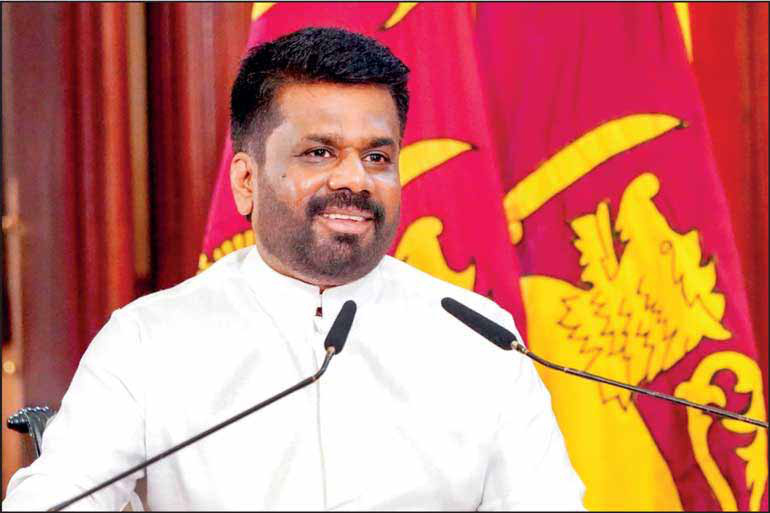

Anura Kumara Dissanayake: Hero of Reform or Villain in Disguise?
Anura Kumara Dissanayake: Hero of Reform or Villain in Disguise?
Jaffna Monitor hellojaffnamonitor@gmail.com 73 R ecently, President Anura Kumara Dissanayake appeared on the political program Sattana on Sirasa TV, where he patiently and responsibly answered questions from journalists for nearly three and a half hours—an unprecedented moment in the 47-year history of Sri Lanka's executive presidency. He faced the questions with calmness and complete self-confidence, free from any tension or discomfort. His natural composure, effortless grace, and body language—radiating a gentle, engaging warmth—were all hallmarks of his distinctive character. He presented a clear, data-backed picture of the country’s overall macroeconomic trends. But he didn’t stop there; he went on to share detailed insights, supported by accurate statistics and relevant examples. Throughout the entire three-and-a-half-hour session, his voice remained steady, flawless, free from hesitation, stumbles, or pauses to search for words. Among all eight individuals who held the presidency between 1978 and 2024, not one has ever appeared before the press this well- prepared. Equally, none of his predecessors demonstrated such clarity and conviction in presenting a comprehensive reform agenda or showed the ability to structure their thoughts and express them with such coherence and fluency. In that sense, it is evident that no one, either in the opposition or the ruling party today, Anura Kumara Dissanayake: Hero of Reform or Villain in Disguise? BY: M.L.M. Mansoor Guest Column
Jaffna Monitor hellojaffnamonitor@gmail.com 74 comes close to challenging Anura Kumara’s charismatic personality, distinctive leadership qualities, and exceptional communication skills. Apart from hurling insults at the President, calling him names like ‘Anda Puluhan’ (Great Liar) and ‘Andhare’ (Court Jester), today’s opposition lacks the strength or vision to present any constructive programs to the electorate. It must be said that, in the past 50 years, there has never been an opposition to this weak or this disconnected from the people. The way this year’s May Day rallies were organized clearly highlighted the growing prominence of the NPP as a giant political force and, in stark contrast, the rapid decline and disintegration of parties like the SJB, SLFP, and SLPP. Those like Sajith Premadasa, Namal Rajapaksa, Champika Ranawaka, and Dilith Jayaweera, who continue to spend their days dreaming of the presidency, remain far behind when it comes to matching the exceptional qualities demonstrated by Anura Kumara. Fully aware of the reality that an immediate economic recovery with a substantial relief package for the people in the form of reduced cost of living and new job opportunities is not feasible, the government appears to be strategically focusing its attention on other sectors. Within this context, the President has taken up the slogan: ‘We will root out corruption, bribery, waste, and malpractice from politics and the state machinery’. The government believes that this approach, though indirect, could eventually pave the way for economic recovery and sustainable development. Bringing an end to the entrenched Politician– Bureaucrat nexus—a system that has long operated as a collective looting mechanism—is

Jaffna Monitor hellojaffnamonitor@gmail.com 75 the first step in this effort. As the President pointed out, it appears that this dismantling has already begun. However, fully eradicating the deeply rooted culture of bribery and corruption within the bureaucratic machinery will require a long and sustained effort. The government’s next priority is to weaken and neutralize religious extremist forces by dismantling the so-called Rajapaksa legacy, which thrived on an aggressively racist agenda. A few prominent pro-government social media activists have already been strategically deployed for this purpose. One of the most popular and influential YouTubers offering unwavering support to President Anura Kumara Dissanayake and the NPP government is Sudaththa Thilaksiri, popularly known as "Sudaa." It is widely believed that he operates with the tacit endorsement and backing of senior NPP leaders. (Many have also raised questions about the special police protection he is reportedly receiving from the government.) He uploads at least four videos to his YouTube channel every day, either solo or in collaboration with another person. In the Sinhala YouTube space, Sudaa’s archrival is Iraj Weeraratne, an outspoken loyalist of the Rajapaksas, particularly Namal Rajapaksa. It's no exaggeration to say he represents their camp online. The intense clashes between these two, though lacking in serious political discourse or reasoned debate, draw tens of thousands of viewers through their sharp insults, innuendos, and the use of Sinhala obscenities rarely uttered in the public sphere before. “It is rather unfortunate that figures like Suddaththa Thilakasiri have risen to become a key influencer of the public opinion in this country... However, given the complexities of today’s social media-driven world, in a sense, it is inevitable,” says veteran leftist ideologue and political activist Deepthi Kumara Gunaratne. It goes without saying that the severe criticisms directed at the NPP government by the opposition and anti-government YouTube channels cannot be countered individually by ministers or the over one hundred newly elected Members of Parliament. Most members of the government simply lack the communication training or the debating skills necessary to appear on visual media and effectively outsmart their opponents. In a way, Suddaththa Thilakasiri plays a complementary role in this regard, acting almost as the government’s unofficial spokesperson in the digital space. Complementing his efforts from another platform is Professor Nirmal Ranjith Dewasiri of the University of Colombo, Department of History, who runs the YouTube channel History with Nirmal. From a pro-government standpoint, he analyzes contemporary political and social issues in Sri Lanka. He also attempts to provide both the ideological and practical contexts for the decisions and moves made by President Anura Kumara. The virulent attacks launched by Sudaa’s YouTube channel targeting hardcore Sinhala nationalist elements at an unprecedented scale appear to have the implicit nod of the government. In a video released during the Dalada Exposition, he praised the exemplary gesture shown by the Muslim community in Kandy by keeping city mosques open for the convenience of thousands of devotees. He used that opportunity, as well, to hurl severe verbal abuse targeting Galagoda Aththe Gnanasara Thero, whose extreme Sinhala-Buddhist outfit the Bodu Bala Sena has been on a warpath with the country’s Muslim minority since 2012.
Jaffna Monitor
hellojaffnamonitor@gmail.com
76
In another viral video, Sudaa launched a
scathing attack on the key players of the
Dr. Shafi conspiracy, such as Athuraliye
Rathana Thero, Wimal Weerawansa, Udaya
Gammanpila, and Channa Jayasumana, by
referencing the A Level results of his daughter.
It seems that a well-orchestrated effort is made
to weaken religious extremists.
Meanwhile, certain remarks made by
Balangoda Kasappa Thero during Dan
Priyasad’s condolence speech, where he
accused Jihad extremists of being behind
Dan’s killing, without presenting any evidence,
has also drawn sharp criticism in the Sinhala
social media circles.
In sum, these developments, although
may seem unrelated, point to an emerging
confrontation between hardline Sinhala-
Buddhist elements and the NPP government.
That could escalate further in the coming
months.
A leading Buddhist monk recently made the
following remarks on a YouTube channel in
a program titled The Victory of Malimawa
means the Defeat of Sinhala Buddhists:
“Appointing a Christian as the Minister in
charge of the Buddha Sasana and Religious
Affairs is not a coincidence. It was a calculated
move. These individuals are not truly
‘Niragamika’ (non-religious); While they
respect all other religions in Sri Lanka, they
deliberately demean Buddhism alone.
He further alleged: “For years, the Galduwa
Aranya sacred site has been maintained and
refurbished by the Sri Lankan Navy. However,
this time when the request was made for such
assistance, the Navy authorities responded
by sending a letter stating that the required
services can only be rendered subject to a
payment of Rs. 93,000 per hour”.
In late March, a new Hall was inaugurated
at the Thayiddi Tissa Vihara premises in
Jaffna, reportedly affiliated to the Amarapura
Chapter. During the religious ceremonies
that followed, many military personnel were
deployed for security and almsgiving duties,
and a military band was also present. However,
it is said that the army was abruptly withdrawn
from the site, following a phone call from the
Army Commander.
In response to this development, Wimal
Weerawansa launched a scathing attack on the
President during a press conference held in
Colombo. One of the points he raised was: “A
top-level Government leader has summoned
the senior officials of the Department of
Archaeology and issued a strict directive, to
the effect that: ‘From now on, archaeological
sites in the North and East should not be
labeled as Buddhist or Hindu sites.' This
directive will inevitably lead to future claims
by Hindus over sites currently considered
Buddhist heritage”.
Weerawansa also quoted two lines from a
letter written by Dr. Pussellawel Somavisuddhi
Mahanayaka Thero of the Amarapura Chapter,
to the President:
“We opine that the Army Commander,
someone who belongs to a different faith,
should have acted with even greater caution in
this matter.”
While the government has been handling very
sensitive issues with great caution, these two
incidents also demonstrate that it is gradually
taking steps to remove certain ‘problematic
precedents’
President Anura Kumara’s mildly worded
admission during the Sattana program—“We
must accept that in the past, we have not
addressed the problems of the Tamil people
in a way that respects their sentiments. To
be honest, we have mostly focused on the
Sinhalese population”—can be seen as a
Jaffna Monitor hellojaffnamonitor@gmail.com 77 remarkable shift in the thinking within the JVP camp. In addition, following a few confusions related to the recent Dalada Sacred Tooth Relic Exposition, a series of attacks launched by the "Sudaa" YouTube channel targeting the Diyawadana Nilame (Chief Lay Custodian of the Temple of the Tooth) has now reached its peak. Sudaa has publicly accused the Diyawadana Nilame of misusing Temple funds and engaging in illegal financial transactions. He has also issued a warning, stating that he will present evidence to support these claims in the coming days. It is important to note that these criticisms are emerging at a crucial time - just months ahead of the upcoming election to appoint the next Diyawadana Nilame. Galagoda Aththe Gnanasara Thero, who had a strong presence in the country’s polity over the past 13 years by capitalizing on Islamophobia, perhaps for the first time is now facing a hostile government. In the recent press conference, his body language revealed noticeable tension and fear, which became apparent to close observers. Sudaa has even issued a warning that he may be compelled to release certain videos related to the darker side of Gnanasara Thero. Whether the controversial monk could continue his usual practice of spreading unsubstantiated narratives about Islamic extremism in Sri Lanka, thereby stoking irrational fears among Sinhalese and tensions within the Muslim community, remains to be seen. There is no doubt that the most significant challenges Anura Kumara Dissanayake currently faces include managing the economic crisis, handling of protests led by the "Anthare" (Inter-University Student Federation) led by Kumar Gunaratnam, and the protests organized by trade unions. However, when it comes to minority communities, whether he will ultimately be seen as a Hero or a Villain, depends entirely on how he chooses to deal with the re-emerging forces of ethno-religious extremism in the country!